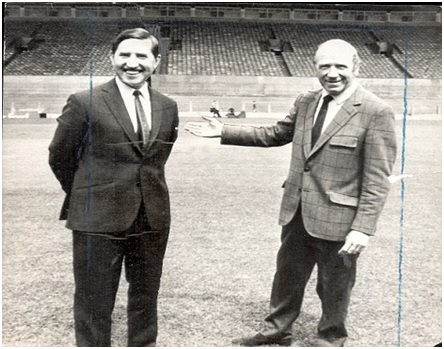
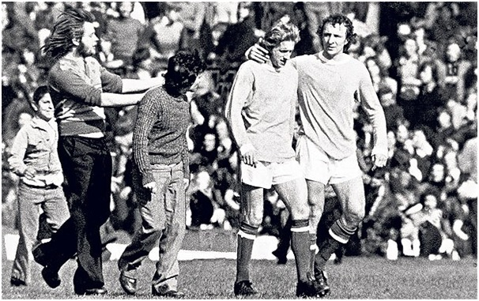

Chương 18

att Busby vốn không muốn người ngoài dẫn dắt United, nhưng sau thử nghiệm thất bại với Wilf McGuinness, ông đặt tiêu chí kinh nghiệm và danh tiếng lên hàng đầu trong việc tìm truyền nhân. Ứng viên Busby nhắm đến là Jock Stein, người dẫn dắt Celtic giành Cúp C1 năm 1967. Pat Crerand, lúc ấy vừa giải nghệ chuyển sang làm trợ huấn, được phái sang Scotland làm thuyết khách, đến nhà Stein thuyết phục ông về Manchester. Mọi chuyện xem chừng đã xuôi xuôi thì vợ Stein bước vào, tuyên bố mình chỉ ủng hộ Celtic, nhất quyết không đi nơi khác. Thế là xôi hỏng bỏng không! United chuyển mục tiêu sang HLV Chelsea, Dave Sexton, cũng bị từ chối, đành mời nhân vật kém danh tiếng hơn: Frank O’Farrell của Leicester.
Đã nghe chuyện về McGuinness, trước khi nhận lời, O’Farrell đưa ra hai điều kiện: 1/ Phải cho ông làm việc tại văn phòng HLV trưởng, tức văn phòng Matt Busby đang chiếm giữ; 2/ Busby cũng như các thành viên khác trong BLĐ không được quyền can thiệp vào công tác chuyên môn. Cả hai đều được chấp thuận. Busby còn trấn an O’Farrell, cho biết United sẽ kiên nhẫn, giành cho ông nhiều thời gian, không đòi hỏi phải có thành tích ngay.

Sir Matt Busby giới thiệu Frank O’Farrell (Ảnh: Dailymail.co.uk)
Tuy vậy, O’Farrell vẫn cảm thấy bất an. Nhìn Law, Stepney, Morgan và trợ huấn Crerand thường xuyên cận kề, đi đánh golf cùng Matt Busby, ông chột dạ: Chẳng biết hằng ngày bọn nó mách lẻo gì với ông già? Cho rằng đội hình hiện tại đa số chỉ trung thành với Busby, không chịu phục mình, O’Farrell lên kế hoạch mua hàng loạt cầu thủ cầu thủ mới để gây dựng vây cánh. Trong danh sách xin mua của O’Farrell, Busby gạt bỏ hai cái tên: Peter Shilton và Alan Ball: Phong độ Stepney vẫn ổn định, chẳng cần thêm Shilton, còn Alan Ball là bạn nhậu của George Best, mua về chỉ tổ gây họa. Những cái tên còn lại đều được chuẩn y.
Trong thời gian tại chức ngắn ngủi, O’Farrell đưa về Old Trafford năm cầu thủ, trong đó nổi bật nhất là trung vệ Martin Buchan, người sẽ đeo băng đội trưởng Quỷ Đỏ thời kỳ 1975-1982. Từ đội trẻ, tiền vệ đầy triển vọng Sammy McIlroy cũng được đôn lên. Thế nhưng, cũng như người tiền nhiệm Wilf McGuinness, O’Farrell vẫn phải đặt cược sinh mạng HLV vào phong độ “bảy nổi ba chìm” của “siêu quậy” George Best. Lúc O’Farrell mới đến, Best đang cơn hứng, chơi như nhập đồng, mới hết tháng 11, 1971 đã ghi 14 bàn thắng, trong đó có nhiều bàn đẹp ngất ngây, đưa United lên ngôi đầu bảng Hạng Nhất. “Mỗi tối tôi đều cầu nguyện”, O’Farrell chia sẻ, “Và tôi cảm ơn Chúa vì đã cho tôi George”.
Ít lâu sau, Chúa không còn nghe lời O’Farrell. Best bắt đầu trở chứng, mờ nhạt hẳn đi. O’Farrell ngọt nhạt đủ điều, tìm mọi cách khuyên nhủ Best bớt chơi bời. Tất cả đều vô hiệu. Viện cớ United không còn tham vọng, không chịu mua thêm cẩu thủ đẳng cắp để hỗ trợ cho mình, Best cắm đầu mãi vào “tứ đổ tường”. Ba tháng đầu, anh ghi 14 bàn, nhưng trong năm tháng còn lại, chỉ lập công thêm được 4 lần. Từ ngôi hạng nhẩt, Quỷ Đỏ kết thúc mùa bóng ở vị trí hạng tám quen thuộc. George Best tuyên bố giã từ sân cỏ, rồi vài ngày sau đổi ý, quyết định ở lại.
Lẽ ra Best không nên đổi ý làm gì. Sau Quả Bóng Vàng, phong độ anh đã phập phù, nhưng ít ra vẫn còn những thời điểm xuất thần. Từ mùa 1972-1973 trở đi, Best hoàn toàn hết thời, không bao giờ tỏa sáng được nữa. Át chủ bài không còn tác dụng, O’Farrell cũng bó tay, và United thành con diều đứt dây. Đội khởi đầu mùa giải mới tệ chưa từng thấy, đá 9 trận liền không biết mùi chiến thắng, ghi được vỏn vẹn 5 bàn. Đã hứa để mặc O’Farell với công tác chuyên môn, song đến nước này, Matt Busby đành can thiệp.
“Trong một buổi tiệc”, O’Farrell kể lại, “Matt nói với vợ tôi: Chồng bà tính tính độc lập không nghe ai, bà nói với ông ấy chịu khó lắng nghe tôi với. Thế là tôi mời Matt vào văn phòng uống cà phê, bảo ông ấy cần gì thì nói thẳng. Matt ngần ngừ một lúc rồi nhận xét: Lẽ ra anh không nên để Charlton ngồi ghế dự bị. Sau đó lại nói tiếp: Tôi thấy phong độ Martin Buchan đang không được tốt. À, thế là ổng nhúng mũi vào việc của tôi đây, Martin Buchan chơi có tệ đâu cơ chứ. Từ đó trở đi, tình hình ngày càng xấu hơn.”
Không chỉ hai sếp hục hặc nhau, cầu thủ cũng chia ra hai phe rõ rệt, cựu binh đứng về phía tổng giám đốc, còn tân binh ủng hộ HLV. Phe cựu binh ghét nhất Buchan, cho rằng anh này là “gián điệp” của O’Farrell. Trước cảnh nội tình tan nát, những công thần tâm huyết như Bobby Charlton đau lòng mà không biết làm sao, rơi vào trạng thái trầm cảm. Trong khi đó, George Best ngày càng quá đáng, đến độ O’Farrell cũng chịu không thấu, đem rao bán anh với giá 300000 bảng. Best phản ứng bằng cách bỏ tập, bỏ đấu, nằm lì trong “Bàn Tơ động”, cứ thế hút xách, rượu chè, trai gái suốt cả tháng trời.
Đá đã kém, nội bộ còn lục đục, Quỷ Đỏ không sao ngóc đầu lên nổi. Ngày 16 tháng 12, 1972, đội bị Crystal Palace hạ nhục 5-0, chết dí ở vị trí bét bảng. Tan trận, Denis Law ngao ngán than cùng Pat Crerand: “Palace đá dở tệ mà vẫn thắng mình 5 trái. Còn gì để nói nữa đây?” Matt Busby thực tế hơn, ông lên gặp Tommy Docherty, HLV tuyển Scotland đang ngồi trên khán đài: “Tommy, anh đồng ý về Old Trafford chứ?” Docherty gật đầu, về thảo đơn từ nhiệm gửi lên liên đoàn Scotland, trong khi Busby nhanh chóng bảo chủ tịch Louis Edwards sa thải Frank O’Farrell. Nghe tin O’Farrell mất chức,George Best, đang nằm trong quán nhậu, tuyên bố từ giã sân cỏ lần thứ hai.
Trước khi nắm Scotland, Docherty từng dẫn dắt Chelsea, Queens Park Rangers và Porto, danh tiếng rõ ràng vượt xa O’Farrell. Dù vậy, Matt Busby vẫn chưa tin ông hoàn toàn. Một mặt mời Docherty, mặt khác Sir Matt cài Pat Crerand vào ghế trợ lý, hòng dễ kiểm soát vị HLV mới. Docherty biết vậy, song ngoài mặt vẫn ra vẻ tươi cười. Rất khôn ngoan, ông hiểu rằng việc đầu tiên cần làm khi đến CLB mới là phải lấy lòng các sếp, không phải gây xung đột.
“Tôi hân hạnh có HLV vĩ đại nhất thế giới ở bên cạnh”, Docherty cao rao, “Đương nhiên, tôi sẽ thường xuyên tham vấn, học hỏi ông ấy. Có họa là rồ mới bỏ lỡ cơ hội này”. Ngợi khen Busby, ông cũng không quên tạo dựng mối quan hệ với chủ tịch Louis Edwards. Trong khi Busby coi Edwards như đàn em, đối xử khá xuồng xã, Docherty hễ gặp Edwards ở đâu là vồn vã: Ngài chủ tịch thế này, ngài chủ tịch thế nọ, một cách vô cùng long trọng.
Phổng mũi trước những lời có cánh của Docherty, Edwards và Busby duyệt ngay mỗi khi ông xin mua cầu thủ mới. Trong sáu tháng đầu tại chức, Docherty mua về đến sáu tân binh, đáng chú ý có Lou Macari từ Celtic (200000 bảng) và George Graham từ Arsenal (120000). Lou Macari đã đồng ý chuyển tới Liverpool, nhưng vừa được United tiếp cận, liền gọi cho Bill Shankly xin hủy thỏa thuận. Trong thập niên 1970 đáng chán, tiền vệ này sẽ là ngôi sao sáng nhất của Quỷ Đỏ[1].
Hiển nhiên, Docherty mua nhiều cầu thủ để tăng cường lực lượng, tránh cho United khỏi xuống hạng. Song mục đích thầm kín của ông cũng giống như O’Farrell: Xây dựng vây cánh riêng cho mình, dần thoát khỏi tầm ảnh hưởng của Sir Matt. Trong cuộc chiến trụ hạng, Docherty thành công: United đứng thứ 18 mùa 1972-1973. Đúng là vật đổi sao dời, bức tranh vân cẩu không biết đâu lường trước. Nhìn vào cảnh United đăng quang năm 1968, không ai ngờ nổi chỉ năm năm sau, đội đứng gần chót bảng mà vẫn mừng như chết đuối vớ được phao. Mùa đó, ở giải Hạng Nhất, CLB chỉ ghi được 44 bàn, thủng lưới 60. Vua phá lưới là lão tướng Bobby Charlton, với…6 bàn thắng!
Đã 36 tuổi, thêm quá ngán ngẩm cái cảnh vật vờ của CLB thân thương, Charlton quyết định giải nghệ. Trong sự nghiệp 17 năm, anh chỉ chơi cho United, khoác màu áo đỏ tổng cộng 758 lần, ghi 249 bàn thắng, cả hai đều là những con số kỷ lục[2]. Hôm Charlton nói lời giã biệt, sau trận gặp Chelsea ngày 28 tháng 4, 1973, khán giả đồng loạt đứng lên, hô vang: “Sir Bobby Charlton, Sir Bobby Charlton”, dù phải hơn 20 năm sau, huyền thoại này mới được phong tước hiệp sỹ.
Charlton treo giày, tránh cho Docherty phải khó xử, vì mùa bóng kết thúc cũng là lúc vị HLV mở chiến dịch “trảm” các cựu binh. David Sadler bị bán sang Preston, Tony Dunne sang Bolton. Ngay “nhà vua” Denis Law cũng chịu chung số phận. Một mặt hứa hẹn sẽ gia hạn hợp đồng với Law, và giành cho anh một chỗ trong BHL tương lai, mặt khác Docherty báo lên BLĐ Law yêu cầu được ra đi, đề nghị BLĐ chấp thuận yêu cầu ấy. Các vị giám đốc ban đầu phản đối, không muốn bán đi biểu tượng của CLB, song Docherty cứ nói riết, họ đành đồng ý. Law không hề hay biết những chuyện hậu trường này, anh nghe tin mình bị đẩy về đội bóng cũ Manchester City trên TV!
Tống khứ Law, nhưng Docherty tin George Best vẫn còn giá trị sử dụng. Sau khi Busby thuyết phục được Best trở lại sân cỏ, Docherty thuê riêng một HLV thể lực cho cầu thủ người Bắc Ireland, hòng giúp anh lấy lại “phom” trước mùa 1973-1974. Việc George Best tái xuất tạo hai luồng dư luận trái chiều. Những ai biểt rõ Best đều lắc đầu, cho rằng Docherty lại rước bom vào nhà, còn các tân binh do Docherty mang về, lần đầu tiên được tiếp xúc cùng Best, thì lé mắt khâm phục và khấp khởi hy vọng. “Kỹ năng anh ấy vẫn là số một”, Lou Macari tấm tắc, “Trên sân tập, ảnh biểu diễn những màn ngoạn mục, khiến chúng tôi cứ muốn dừng lại, vỗ tay liên tục”.
Tiếc thay, sân tập là một chuyện,sân đấu lại là chuyện khác. Trong mùa cuối cùng khoác màu áo đỏ, Best đá 12 trận, ghi 2 bàn, thể hiện phong độ không gì nổi bật. Chứng nghiện rượu của anh không giảm mà còn tăng. Trước trận gặp Plymouth tại Cúp FA vào ngày 5 tháng 1, 1974, Best đến sân trễ, trong trạng thái nồng nặc hơi men, bị Docherty đuổi về. Anh về thật, mà về vĩnh viễn, không bao giờ quay lại nữa. Sau bao năm dung dưỡng ung nhọt, United cuối cùng cũng hết kiên nhẫn với Best, quyết định hủy hợp đồng.
Thế là chỉ trong vòng vài tháng, Old Trafford lần lượt mất đi ba người con ưu tú nhất. Tam Thánh ra đi, mang theo hết ánh hào quang; Nhà Hát Những Giấc Mơ chỉ còn lại những tối tăm, bạc nhược. Kỷ nguyên đỉnh cao kết thúc, theo sau bằng kỷ nguyên vực sâu. Về phần George Best, chia tay United, anh lang bạt kỳ hồ du đấu khắp nơi, từ Nam Phi đến Hoa Kỳ, từ Hong Kong đến Úc, đi đến đâu gây rối đến đấy, nên chẳng ở đâu được lâu. Dù vậy, nhờ ăn vào quá khứ huy hoàng, Best vẫn là siêu sao, vẫn giàu có, vẫn chơi bời bốc trời, thậm chí đến trước lúc qua đời, tuy đã già còm, mất hẳn vẻ điển trai, vẫn được biết bao fan theo đuổi.
Thời điểm Best ra đi, với hai bàn thắng, anh đang dẫn đầu danh sách phá lưới của United, ngang với… thủ thành Alex Stepney, người hai lần lập công từ chấm phạt đền! Áp dụng chiến thuật 4-5-1, với mỗi mình Lou Macari cắm phía trên, Quỷ Đỏ rất ít để lọt lưới, nhưng cũng hầu như không ghi bàn, vừa đứng chót bảng, vừa mang tiếng chơi tiêu cực, phản bóng đá. Là tín đồ của túc cầu vị nghệ thuật, Matt Busby không thể nhắm mắt đứng nhìn. Ông chỉ thị cho Docherty: “Dù có xuống hạng, cũng phải giữ gìn bản sắc!” Chiều ý sếp, từ 4-5-1, Docherty chuyển sang dùng đội hình tấn công 4-2-4, đẩy cầu thủ trẻ Sammy McIlroy lên đá trung phong cùng Macari. Dù vậy, phong độUnited chỉ khá lên chút ít, từ đội sổ ngoi lên… áp chót. McIlroy nỗ lực hết mình, ghi bàn nhiều nhất đội, mà cả giải cũng chỉ có sáu trái, không hơn Charlton mùa trước.
Ngày 27 tháng 4, 1974, United buộc phải thắng City tại Old Trafford mới duy trì được hy vọng trụ hạng. Ở thế đường cùng, Quỷ Đỏ tấn công dồn dập, song không sao tìm nổi đường vào lưới đối phương, ngược lại còn dính đòn “hồi mã thương”. Phút 81, trong một đợt phản công nhanh, Francis Lee xâm nhập vòng cấm địa, chuyền vào giữa cho Denis Law. Sau một thoáng chần chừ, Law thực hiện cú đánh gót điệu nghệ, tung lưới đội bóng cũ.
Trong khi đồng đội ùa đến chúc mừng, Law chẳng nói, chẳng cười, bước đi thẫn thờ như kẻ mộng du. Thật đó sao? Anh đã lập công đó sao? Law không bao giờ muốn rời Old Trafford, nhưng người ta cố đẩy anh đi. Và nay, định mệnh trớ trêu lại bắt anh vung gươm kết liễu đội bóng cũ thân yêu, ngay trên Mộng Hý Trường. “Thường ghi bàn, ai cũng vui”, Martin Buchan kể, “Denis thì hoàn toàn trái ngược. Tôi không bao giờ quên nét mặt ảnh khi ấy”.
Denis Law là cầu thủ duy nhất trong lịch sử từng chuyển nhượng trực tiếp từ United sang City, sau đó ghi bàn đẩy đội đỏ xuống hạng. Tuy nhiên, người hâm mộ hiểu rõ nỗi lòng anh, không một ai coi Law là tên bội phản. Trên sân hôm đấy, CĐV không công kích, chê trách Law, mà hùa nhau tràn xuống sân, hy vọng nếu trận cầu bị gián đoạn, ban tổ chức sẽ phải cho hai đội tái đấu. Không may, trọng tài đã được thông báo kểt quả trên các sân khác, biết rằng Birmingham và Southampton, hai ứng viên xuống hạng cùng United, đều giành chiến thắng, khiến kết quả tại Old Trafford trở nên vô nghĩa. Ông bèn nổi còi dứt trận sớm, đồng nghĩa với việc sẽ không có trận tái đấu nào xảy ra.Các cầu thủ United gục ngã trong nước mắt, còn Denis Law vẫn thinh lặng, lầm lũi rời sân. Law sẽ giải nghệ trước khi mùa bóng mới bắt đầu. Cú đánh gót hoàn hảo vào lưới Quỷ Đỏ chính là pha chạm bóng cuối cùng của anh tại giải Hạng Nhất.
Nhận thấythay HLV liên tiếp cũng chẳng mang về hiệu quả, BLĐ United quyết định cho Docherty thêm cơ hội. giao ông chỉ tiêu phải lên hạng lại trong thời gian nhanh nhất có thể. Docherty tận dụng cơ hội này để tiếp tục loại trừ các cựu binh. Trong đội hình United dự giải Hạng Nhì mùa 1974-1975, chỉ còn lại hai cầu thủ từ thời Matt Busby: Alex Stepney và Willie Morgan. Thế mà vẫn chưa xong. Docherty không tin cả nhân sự do O’Farrell đưa về, nên hễ có dịp, ông lại thanh lý. Đến mùa 1975-1976, chỉ Stepney, Buchan và McIlroy còn sót lại từ đội hình Docherty thừa hưởng của O’Farrell[3]!
Không chỉ loại trừ cầu thủ, Docherty còn kiếm cách ly gián Matt Busby và Pat Crerand. Ông thường xuyên rỉ tai Busby rằng vị trợ lý HLV ngày càng trở nên bê bối, đã trễ nãi lại thêm hay say rượu. Busby nghe riết cũng tin, đâm ra hồ nghi Crerand. Docherty bèn đưa về Frank Blunstone và Tommy Cavanagh để giúp mình trong công tác huấn luyện, đẩy Crerand vào thế bị cô lập, phải ngồi chơi xơi nước. Bị “thất sủng”, Crerand xin từ chức vào năm 1976, chuyển sang làm HLV trưởng cho Northampton.
Sau này, khi được hỏi về Docherty, Crerand chỉ nhún vai: “Tommy Doc ư? Nói gì đây? Thà đi nha sỹ bị nhổ mất răng, còn hơn phí thời gian nói về hắn!”

Denis Law buồn bã sau khi ghi bàn vào lưới Manchester United, tống tiễn đội bóng cũ xuống giải Hạng Nhì (Ảnh: Telegraph.co.uk)
Chú thích:
[1] Macari cũng là vua nghịch. Hãy nghe anh kể lại câu chuyện sau đây: “Có lần ở Belgrade, tôi nhốt Paddy Roche và Gerry Daly trong khách sạn suốt một ngày rưỡi. Tôi vào phòng hai đứa, thấy Paddy nằm trên giường, còn Gerry đang đi vào toilet. Tôi lén tháo dây cái điện thoại, thồn nó vào trong áo rồi đi ra. Paddy lo đọc báo, chả biết gì cả. Thế rồi tôi ra ngoài, khóa trái cửa lại. Gerry từ trong toilet la to: Đ.M, Paddy, thằng lùn khóa mất cửa rồi. Tao vừa nghe tiếng lách cách đấy. Gọi điện thoại xuống cho tiếp tân coi. Tiếp đó, nghe tiếng Paddy trả lời: Nhưng Gerry ơi, nó lấy luôn cả điện thoại còn đâu!
[2]Ngày nay, Ryan Giggs đã phá kỷ lục khoác áo United của Charlton, duy kỷ lục bàn thắng vẫn còn đứng vững.
[3] Docherty đẩy Willie Morgan khỏi Old Trafford theo đúng cách đã áp dụng với Denis Law. Ông hứa sẽ gia hạn hợp đồng với Morgan, nhưng nói dối BLĐ là anh đòi được chuyển nhượng.